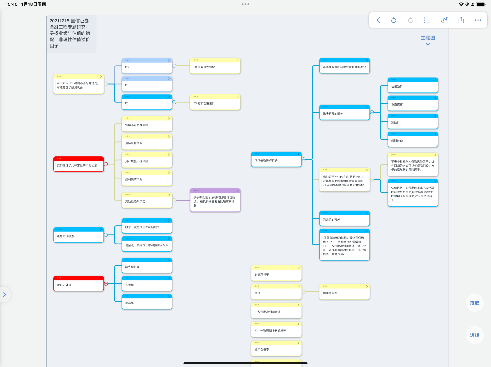
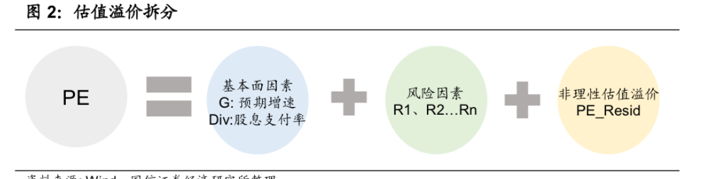
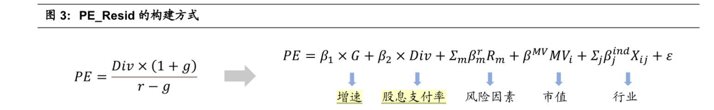
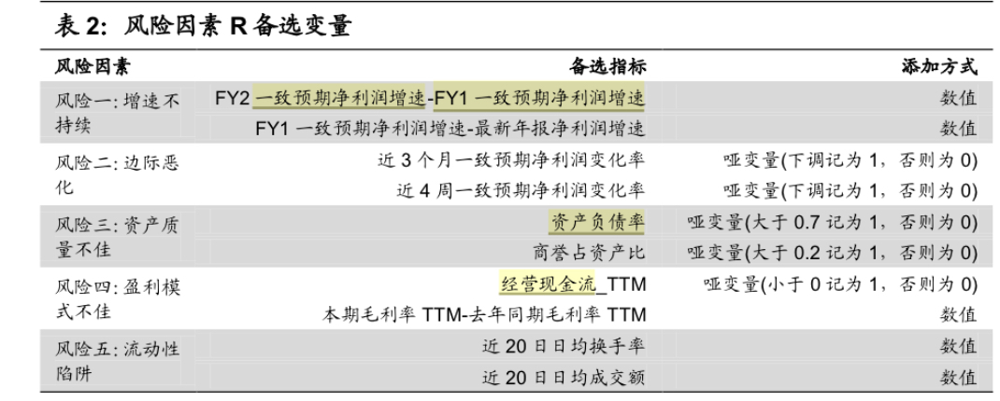
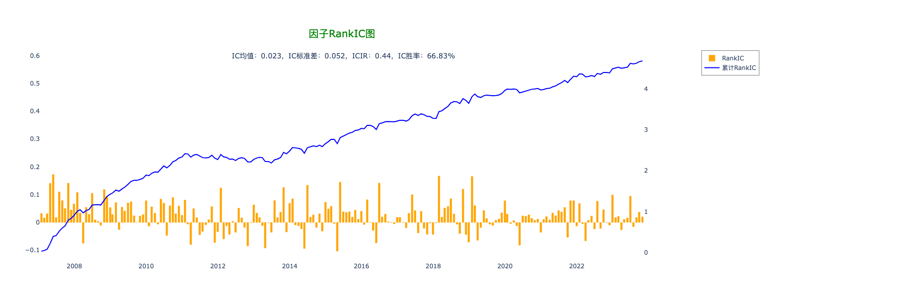
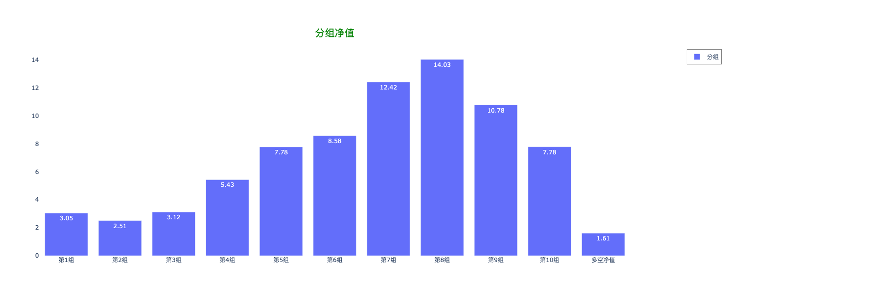
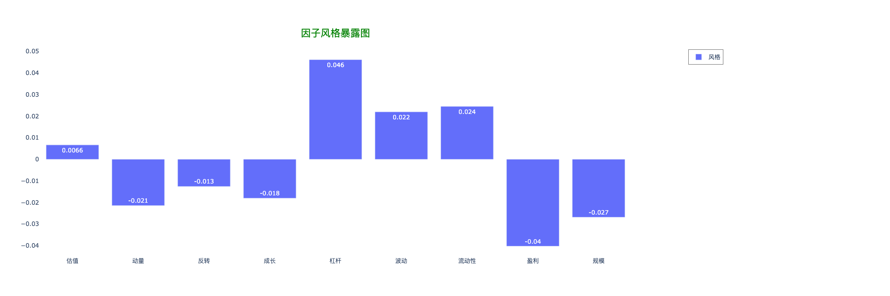

对于《寻找业绩与估值的错配:非理性估值溢价因子》
研报总结
该研报的核心在于价值回归。其构建了一套价值的预测体系，认为最终的价格必然回归价值。其提供了一套模型，来预测合理的价值，然后价格和价值的差，形成了相应的因子。
下图是我整理的关于整个思维导图

因子基础。
整篇研报中，有着对于PE, PB和PS分别进行了讨论。尽管指数不同，但是指标还是基本相同的。大致如下。

按照其逻辑，大致分成三部分。
- 按照传统的财务模型中，PE的计算。
- 风险因素。
- 因子。
所以后的求的因子就是 PE - 财务计算 - 风险计算。
具体计算

上图就是一个简单的拆解。具体的做法，使用了线形回归。
这里的思路其实为
- 用历史数据，去训练这个线形模型。
- 用此模型，来预测当期的PE值。
- 当期的PE值和预测值的差即为因子。
具体代码如下
1
2
3
4
5
6
7
| model = LinearRegression()
cols = data[['增长率', '股息支付率', 'risk1', 'risk2', 'risk3']]
model.fit(cols, data['pe_基本'])
predictions = model.predict(cols)
data['pe_resid'] = predictions - data['pe_基本']
exg_dict['pe_resid'] = 'last'
|
财务模型部分
这部分其实比较好计算。因为都有具体的值，然后一些简单的计算。所以直接看代码就好了。
1
2
3
4
5
6
7
8
9
| data['增长率'] = data['R_basic_eps@xbx_ttm同比']
data.replace([np.inf, -np.inf], np.nan, inplace=True)
data['增长率'].fillna(data['增长率'].mean(), inplace=True)
data['增长率'].fillna(0, inplace=True)
exg_dict['增长率'] = 'last'
data['股息支付率'] = data['C_cash_paid_of_distribution@xbx'] / data['R_np@xbx']
data['股息支付率'].fillna(data['股息支付率'].mean(), inplace=True)
data['股息支付率'].fillna(0, inplace=True)
exg_dict['股息支付率'] = 'last'
|
风险因子

在文中表示，他们的回测中，影响比较大的。为1，2，3。所以我在之前的例子中，用它的1，2，3来回测。
1
2
3
4
5
6
7
8
9
10
11
12
13
14
15
16
17
18
19
20
21
22
23
24
25
26
27
28
|
data['FY1净利润增速'] = data['R_np@xbx_ttm'] - data['R_np@xbx_ttm'].shift(370)
data['FY1净利润增速'].fillna(data['FY1净利润增速'].mean(), inplace=True)
data['FY1净利润增速'].fillna(0, inplace=True)
data['FY2净利润增速'] = data['R_np@xbx_ttm'] - data['R_np@xbx_ttm'].shift(370 * 2)
data['FY2净利润增速'].fillna(data['FY2净利润增速'].mean(), inplace=True)
data['FY2净利润增速'].fillna(0, inplace=True)
data['risk1'] = data['FY1净利润增速'] + data['FY2净利润增速']
exg_dict['risk1'] = 'last'
data['净利润变化率'] = data['R_np@xbx_ttm'] / data['R_np@xbx_ttm'].shift(35)
data['risk2'] = data['净利润变化率'].apply(lambda x: 0 if x > 0 else 1)
exg_dict['risk2'] = 'last'
data['总资产负债率'] = data['B_total_liab@xbx'] / data['B_total_assets@xbx']
data['risk3'] = data['总资产负债率'].apply(lambda x: 1 if x > 0.7 else 0)
exg_dict['risk3'] = 'last'
data['risk4'] = data['C_ncf_from_oa@xbx'].apply(lambda x: 1 if x > 0 else 0)
exg_dict['risk4'] = 'last'
data['换手率'] = data['成交额'] / data['流通市值']
data['risk5'] = data['换手率'].rolling(20, min_periods=1).mean()
exg_dict['risk5'] = 'last'
data['pe_基本'] = data['收盘价'] / data['R_basic_eps@xbx']
data['pe_基本'].replace([np.inf, -np.inf], np.nan, inplace=True)
data['pe_基本'].fillna(data['pe_基本'].mean(), inplace=True)
data['pe_基本'].fillna(0, inplace=True)
exg_dict['pe_基本'] = 'last'
data['pe_稀释'] = data['收盘价'] / data['R_dlt_earnings_per_share@xbx']
exg_dict['pe_稀释'] = 'last'
|
分子评价


